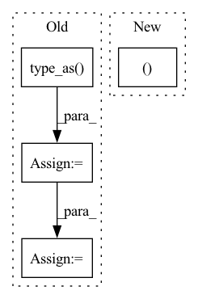

Pattern ID :15038
Before Change
channel_axis = ctx.channel_axis
dequantize_grad = delta * grad
mask_tensor = Variable(mask_tensor.type_as( dequantize_grad.data) )
tensor_grad = grad * mask_tensor
scale_grad = (clamp_out + offset - tensor * mask_tensor / delta) * grad
offset_grad = dequantize_grad * (1 - mask_tensor)
dim = list(range(len(tensor.shape)))
if len(delta) > 1 and len(tensor.shape) > 1:
dim.pop(channel_axis)
intermediate_term1 = scale_grad.sum(dim=dim) / steps
intermediate_term2 = steps / (encoding_max - encoding_min) ** 2 * offset_grad.sum(dim=dim)
tensor_encoding_min_grad = -intermediate_term1 + encoding_max * intermediate_term2
tensor_encoding_max_grad = intermediate_term1 - encoding_min * intermediate_term2
return tensor_grad, tensor_encoding_min_grad, tensor_encoding_max_grad, NoneAfter Change
intermediate_result = IntermediateResult(clamp_out, encoding_min, encoding_max, delta, offset, mask_tensor, steps)
tensor_grad, tensor_encoding_min_grad, tensor_encoding_max_grad = \
grad_fn.calculate_gradients(tensor, grad, intermediate_result, channel_axis)
return tensor_grad, tensor_encoding_min_grad, tensor_encoding_max_grad, NoneIn pattern: SUPERPATTERN
Frequency: 3
Non-data size: 4
Instances Fragment ID: 50452737
Project Name: quic/aimet
Commit Name: 9c0f6f73bb2c2e725d533a065d5cfe08e8e46a41
Time: 2022-09-27
Author: quic_geunlee@quicinc.com
File Name: TrainingExtensions/torch/src/python/aimet_torch/tensor_quantizer.py
M Class Name: QuantizeDequantizeFunc
N Class Name: QuantizeDequantizeFunc
M Method Name: backward(2)
N Method Name: backward(2)
M Parent Class: torch.autograd.Function
N Parent Class: torch.autograd.Function
M File Name: TrainingExtensions/torch/src/python/aimet_torch/tensor_quantizer.py
N File Name: TrainingExtensions/torch/src/python/aimet_torch/tensor_quantizer.py
M Start Line: 744
M End Line: 761
N Start Line: 692
N End Line: 697
Before Change
shift_yy = shift_y.view(-1, 1).repeat(1, len(shift_x)).view(-1)
shifts = torch.stack([shift_xx, shift_yy, shift_xx, shift_yy], dim=-1)
shifts = shifts.type_as( base_cell)
grid_cells = base_cell + shifts
return grid_cells
After Change
def get_grid_cells(self, featmap_size, scale=8, stride=8, device="cuda"):
cell_size = stride * scale
y, x = self.get_single_level_center_point(
featmap_size, stride, dtype=torch.float32, device=device, flatten=True)
grid_cells = torch.stack(
[x - 0.5 * cell_size, y - 0.5 * cell_size, Fragment ID: 50452768
Project Name: rangilyu/nanodet
Commit Name: ed7d3f683d7b8a827ed4866761c0fcdd514678a6
Time: 2021-02-20
Author: lyuchqi@gmail.com
File Name: nanodet/model/head/gfl_head.py
M Class Name: GFLHead
N Class Name: GFLHead
M Method Name: get_grid_cells(5)
N Method Name: get_grid_cells(5)
M Parent Class: nn.Module
N Parent Class: nn.Module
M File Name: nanodet/model/head/gfl_head.py
N File Name: nanodet/model/head/gfl_head.py
M Start Line: 564
M End Line: 581
N Start Line: 562
N End Line: 567
Before Change
t_src_tgt_intgt = -R_tgt_src.bmm(t_tgt_src_insrc)
// Create translation matrix
zeros = torch.zeros(batch_size, 1, 3).type_as( V) // B x 1 x 3
one = torch.ones(batch_size, 1, 1).type_as(V) // B x 1 x 1
trans_cols = torch.cat([t_src_tgt_intgt, one], dim=1) // B x 4 x 1
rot_cols = torch.cat([R_tgt_src, zeros], dim=1) // B x 4 x 3
return T_tgt_src, R_tgt_src, t_src_tgt_intgt
After Change
t_tgt_src_insrc = src_centroid - torch.bmm(R_tgt_src.transpose(2, 1).contiguous(), tgt_centroid) // B x 3 x 1
t_src_tgt_intgt = -R_tgt_src.bmm(t_tgt_src_insrc)
return R_tgt_src, t_src_tgt_intgt
Fragment ID: 50452779
Project Name: utiasasrl/hero_radar_odometry
Commit Name: 4c65c14842aae35580b7b5d0784b8be9d2980773
Time: 2020-11-13
Author: keenburn2004@gmail.com
File Name: networks/svd.py
M Class Name: SVD
N Class Name: SVD
M Method Name: forward(4)
N Method Name: forward(4)
M Parent Class: torch.nn.Module
N Parent Class: torch.nn.Module
M File Name: networks/svd.py
N File Name: networks/svd.py
M Start Line: 40
M End Line: 50
N Start Line: 40
N End Line: 44